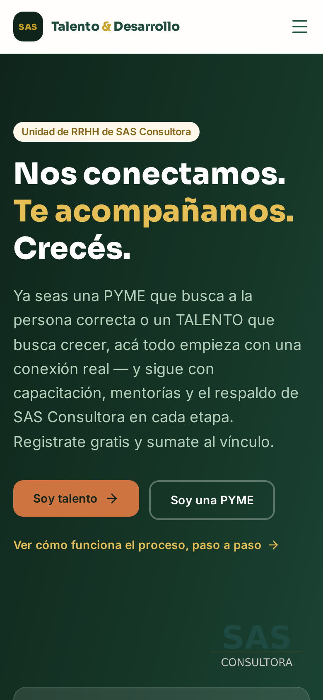
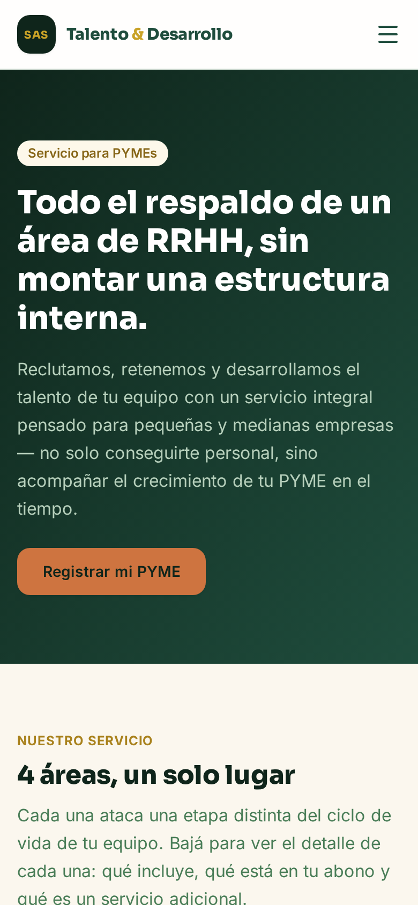
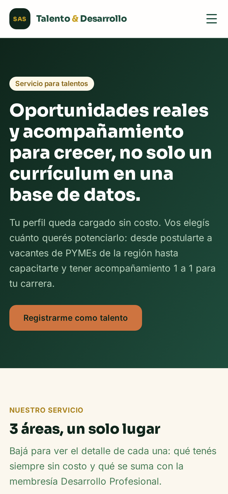

Día 1 del plan: lunes 3 de agosto de 2026. Hasta el miércoles 30 de septiembre. Todo el documento es editable: hacé clic en cualquier texto y escribí encima. Se guarda solo en este navegador y, si te conectás, también en la nube.
Recién arrancamos ayer — 0 PYMEs registradas todavía es normal a día y medio, no es un fracaso. Pero es lo único que de verdad destraba el resto: sin una vacante real no hay postulaciones reales, no hay match, y no hay nada verdadero que contar en el contenido.
Por eso el mensaje a la Lista B cambió: le preguntás primero si tiene algo para cubrir ahora, pero en los dos casos el pedido final es que se registre — con búsqueda activa, se la cargás vos mismo por WhatsApp para que sea cero fricción; sin búsqueda, se registra igual para asegurar el cupo fundador y quedar en el sistema de avisos (mensajes listos en la solapa Mensajes). Eso es lo que más mueve la aguja hoy, más que cualquier posteo.
Los testimonios (solapa Testimonios) quedan para más adelante, y por ahora solo del lado talento — no hay apuro ni fecha fija, se piden cuando salga natural en una charla.
· La plataforma está publicada y funcionando en talento.sasconsultora.com
· Ocho materiales gratuitos cargados, con uno nuevo que se desbloquea por mes
· Email de bienvenida automático con un ebook adjunto
· Segundo material automático a los 20 días del registro
· Aviso automático de vacantes por afinidad, con baja incluida
· Los cobros configurados: planes, vacante única, mentorías y las 4 fases de selección
Traducción: la máquina está lista. Lo que falta de acá en adelante es conseguir gente, y eso no lo hace el software.
No estamos vendiendo una plataforma. Estamos vendiendo dejar de perder tiempo con la gente equivocada: a la PYME, tiempo revisando CV que no sirven; al profesional, tiempo mandando currículums a un pozo sin fondo. La plataforma es cómo lo resolvemos, no lo que vendemos.
De eso se desprende una regla para todo lo que sigue: en ningún mensaje empezamos hablando de la plataforma. Empezamos por el problema de quien nos lee.
Publicar una vacante y recibir postulantes es apenas el primer paso de cuatro. El nombre de la unidad de negocio no es casual: "Talento" es encontrar a la persona; "Desarrollo" es todo lo que viene después, y es la mitad que más valor genera con el tiempo.
| Etapa | Qué significa | Con qué ya contamos |
|---|---|---|
| 1. Encontrar | La PYME publica, el talento se postula, se arma el match. | La plataforma: búsqueda, afinidad, postulación. |
| 2. Inducir | Los primeros 90 días en el puesto, donde más gente se pierde por falta de acompañamiento. | Ebook "Los primeros 90 días", ya publicado. |
| 3. Afianzar | Que la persona se consolide: claridad de rol, cultura, liderazgo del equipo que la recibe. | "Cultivando la Excelencia", "PYME en marcha, cabeza en paz", mentorías, Espacio de Orden. |
| 4. Retener | Que se quede, crezca, y la PYME vuelva a buscar acá la próxima vez. | Capacitaciones continuas, seguimiento, la relación de largo plazo. |
Un marketplace nuevo tiene un problema de credibilidad: está vacío. La solución obvia sería llenarlo de vacantes, pero hoy no hay ninguna abierta.
Lo que sí tenés es prueba del lado talento: gente que colocaste, conforme con el proceso. Del lado PYME todavía no es el momento de pedir testimonios — son relaciones más delicadas y recién arrancamos. Ese testimonio va a llegar solo, en cuanto haya una primera búsqueda real y bien resuelta a través de la plataforma.
Esta es la lista que hace creíble el "te sirve igual aunque haya pocas búsquedas":
1. Perfil cargado una sola vez y postulaciones
ilimitadas, para siempre.
2. Aviso automático por email cuando aparece una búsqueda que encaja con su perfil.
3. Cuatro materiales de formación completos, sin costo.
4. El encuentro en vivo del 27 de agosto.
5. Mentorías y coaching a precio de socio.
Decir "estamos empezando" resuelve la expectativa del primer día. Pero el que se registra y no recibe nada durante seis semanas se olvida de vos, y cuando por fin le llega el aviso de una vacante ya no se acuerda de haberse anotado.
Eso ya está resuelto y corre solo:
| Cuándo | Qué recibe | Estado |
|---|---|---|
| Al registrarse | Bienvenida + el ebook "Crecer sin ascender" | Automático |
| A los 20 días | Segundo material: "Los primeros 90 días" | Automático |
| Segunda semana de agosto | Invitación al encuentro del 27/8 | a mano |
| Cuando haya vacante afín | Aviso con el detalle del puesto | Automático |
1. Un hecho real y verificable — la primera PYME registrada, la primera vacante
publicada, un testimonio real (de talento, por ahora — el de PYME todavía no es realista pedirlo).
Ningún otro contenido puede prometer más tracción de la que hay.
2. El ciclo completo como oferta — la búsqueda gratis es la entrada a encontrar,
inducir, afianzar y retener; nunca se vende como un descuento a plazo aislado.
3. Contenido educativo — hooks y consejos que construyen autoridad mientras llegan
los hechos reales. Es relleno útil, no el mensaje principal.
No inventamos vacantes ni perfiles. Cuando alguien se postula a una búsqueda fantasma perdés exactamente la reputación que estás construyendo.
No importamos CV a la base sin permiso. Los invitamos a registrarse ellos. Es lo correcto y te cubre legalmente: los datos se dieron para una búsqueda puntual, usarlos para otra cosa requiere consentimiento (Ley 25.326).
No publicamos la oferta gratis en el sitio. Si la publicás, deja de ser un regalo y pasa a ser el precio esperado. Se ofrece uno a uno.
No arrancamos con Meta Ads. Pagar tráfico hacia un sitio sin vacantes es tirar la plata. Va en septiembre.
Motor 1 — Contacto directo (el piso). La Lista A (40-60 talentos que ya te conocen) y la Lista B (15-20 PYMEs conocidas) trabajadas a mano, una por una, cubren casi exacto el objetivo. Es lento pero es lo único 100% controlable: depende de que las trabajes, no de un algoritmo.
Motor 2 — Alcance real más allá de tu lista (el multiplicador). Contenido genérico de LinkedIn no genera esto: con cero seguidores, nadie ajeno a vos lo ve. Lo que sí puede escalar más allá de tu lista son tres cosas concretas, no "publicar más":
| Mecanismo | Cómo funciona acá |
|---|---|
| Referidos | Cada PYME o talento que se suma trae a otro. A la PYME: un mes más de vigencia en su búsqueda por cada PYME que refiera y se registre. Al talento: prioridad de aviso o acceso a una capacitación paga, por cada persona que refiera y se registre. Se trackea a mano por ahora (preguntás "¿quién te contó de esto?" al registrar) — no requiere nada nuevo en la plataforma para arrancar. |
| TikTok nativo | Es el único canal cuyo algoritmo empuja contenido a gente que no te sigue, incluso arrancando de cero. Pero tiene que grabarse nativo — cara a cámara, gancho en el primer segundo, nada de leer un posteo de LinkedIn en voz alta. |
| Contenido que se reenvía | No son historias inspiradoras, son herramientas cortas y usables (un checklist, una plantilla) que un dueño de PYME le manda a otro dueño de PYME por WhatsApp porque le sirve, no porque "le gustó". |
| Fase | Cuándo | Objetivo único | Cómo sabés que salió bien |
|---|---|---|---|
| 0. Munición | 30/7 al 2/8 | Juntar testimonios y armar las listas. Primeros contactos y primer contenido. | 5 testimonios · 20 invitaciones enviadas |
| 1. Los tibios | 3/8 al 9/8 | Activar tu base conocida: el resto de los profesionales y las PYMEs clientes. | 25 profesionales registrados · 3 PYMEs |
| 2. Ruido | 10/8 al 23/8 | Contenido, prospección y convocatoria al encuentro. | 40 profesionales · 60 inscriptos al encuentro |
| 3. El encuentro | 24/8 al 30/8 | Encuentro del 27/8 y las llamadas de cierre que vienen después. | 35 asistentes · 8 conversaciones abiertas |
| 4. Escalar | 31/8 al 30/9 | Meta Ads sobre una base que ya funciona. | 3 PYMEs pagando · 1 selección vendida |
Por ahora solo tiene sentido pedirlo del lado talento — a alguien que ya colocaste, con quien la relación es liviana. Del lado PYME todavía no: son relaciones más delicadas y recién arrancamos, pedir un testimonio ahora sería prematuro. Ese va a llegar solo cuando haya una primera búsqueda real y bien resuelta.
No hace falta salir a buscarlo hoy. Si en una charla normal con algún profesional que colocaste surge naturalmente, ahí lo pedís con las preguntas de abajo. No es una tarea con fecha límite.
No lo mandes todavía. Vale el doble porque le habla a tu cliente que paga, pero justamente por eso es una relación más delicada — pedirlo antes de tener un caso real resuelto suena a apuro. Se usa recién cuando haya una primera búsqueda cerrada con resultado bueno.
Pasámelos como te lleguen —texto, audio, captura— y me ocupo del resto:
· Armo el texto final de cada uno, corto y creíble
· Agrego una sección de testimonios en el sitio, en la página de PYMEs y en la de profesionales
· Preparo las placas para Instagram y el texto para LinkedIn
· Los sumo al mail de invitación, que es donde más pesan
Anotá a quién le pediste y cómo viene. Todo editable.
| Persona | Empresa | Lado | Pedido | Estado |
|---|---|---|---|---|
No es "una búsqueda gratis" y listo. Es la entrada sin costo al ciclo completo: te ayudamos a encontrar a la persona, y te dejamos los materiales para inducirla, afianzarla y retenerla — que es la parte que de verdad cambia si esa contratación sale bien o se te va en cuatro meses. Normalmente la búsqueda sola son $80.000; a las primeras 10 empresas se la bonificamos completa.
· Publicación de una búsqueda por 45 días
· Los postulantes ordenados automáticamente por afinidad con esa búsqueda
· Aviso por email a los profesionales de la base cuyo perfil encaje
· Panel para mover a cada candidato por el proceso
· El ebook "Los primeros 90 días" para inducir bien a quien contrates
· Acceso a las capacitaciones gratis de liderazgo y gestión de equipo, para afianzar al que entra
Que nos digas con franqueza qué funcionó y qué no. Y si el resultado es bueno, que nos dejes contarlo.
Vence el 31 de agosto de 2026. Solo 10 empresas. Una búsqueda por empresa.
Nombra el precio que no van a pagar. Si no decís "$80.000", el número que les queda en la cabeza es cero, y cobrarles después se vuelve una discusión.
Tiene fecha de vencimiento. Una oferta sin plazo no se rechaza: se posterga, que es peor porque no te enterás.
Tiene cupo. "Las primeras 10" convierte la decisión de "¿me sirve?" en "¿llego?".
Pide algo a cambio. Un regalo puro se percibe como desesperación; un intercambio, como acuerdo entre pares. Y te llevás el testimonio, que es lo que te va a hacer falta en octubre.
No hace falta diseño: fondo de color y este texto alcanza. Subí los dos seguidos, cada uno se lo lleva puesto quien le sirve. El mismo texto funciona igual como Historia de Instagram.
Reemplazá [NOMBRE] y [PUESTO] en cada envío. Personalizado uno por uno rinde cinco veces más que un mailing. Si son 40, son 40 minutos.
Nada de "entrá y registrate". Le sacás la búsqueda por WhatsApp y la cargás vos mismo (o me pasás los datos y la cargo yo). Cero fricción para ella, que es justo lo que estás vendiendo.
No es "quedate en mi lista a mano". El registro sigue siendo el pedido, pero con el motivo correcto para este caso: no es para publicar una vacante, es para asegurarse el cupo del Programa Fundadores y quedar en el sistema para el aviso automático cuando la necesite — sin depender de que yo me acuerde de nadie. Es autoservicio real: lo hace cuando quiera, no depende de una charla.
Después de cada audio, el link va en un mensaje de texto aparte, solo: https://talento.sasconsultora.com/#/registro
Guion con cortes: [cámara] → [pantalla] → [cámara] → [cierre].
Mismo criterio que el audio: el link nunca va hablado, va como texto en pantalla en el cierre y en la descripción/bio del posteo.
Ya sacada — portada, se ve real porque es la pantalla tal cual.

Descargar imagenYa sacada — encabezado de la solapa PYMEs.

Descargar imagenYa sacada — encabezado de la solapa Talentos.

Descargar imagenUn mensaje, no un comunicado formal — a un contacto de la cámara de comercio, un grupo de empresarios de WhatsApp, o un periodista de un medio local que ya te conozca o pueda conocerte. Esto pesa más en un día que meses de posteos, porque llega a gente fuera de tu red directa.
Se manda a los primeros que se registren, sean PYME o talento. El beneficio se trackea a mano por ahora: cuando alguien nuevo se registre, preguntale "¿quién te contó de esto?" y anotalo.
Dijiste algo importante: "por experiencia los dueños no se suman a webinars gratuitos". Es cierto, y la razón es que un webinar gratuito le dice al dueño "esto es marketing masivo, te van a vender algo". Tiene razón en no ir.
Cinco cambios que lo dan vuelta:
1. No se llama webinar. Se llama encuentro. La palabra "webinar" ya perdió.
2. Los dueños se invitan uno por uno. Por WhatsApp o llamada, nunca por formulario masivo.
3. Se vende el "quién", no el "qué". "Van a estar otros dueños de la zona" convoca más que cualquier temario.
4. Cupo real y chico. 40 lugares. Con 200 inscriptos ningún dueño va, porque sabe que es una charla masiva.
5. Cuarenta y cinco minutos. "Una hora y media" es un "no" automático para alguien que tiene una empresa.
6. Motor 2 — que sea alcance, no solo cierre. A cada dueño que invitás personalmente, sumale: "traé a otro dueño de PYME que te parezca que le sirve, hay un lugar para él". Sigue siendo 40 lugares chicos y exclusivos, pero cada invitación tuya puede traer una segunda persona que vos nunca contactaste — así el encuentro también suma gente fuera de tu lista.
El talento no alcanza
Por qué los mejores equipos no son los que tienen las mejores individualidades. Una conversación para dueños de PYME y para profesionales que quieren crecer.
"Tengo gente capaz y el equipo igual no funciona. ¿Por qué?"
"Soy bueno en lo mío y no termino de crecer. ¿Qué me falta?"
| Fecha | Jueves 27 de agosto de 2026 |
| Hora | 19:00 a 19:45 |
| Dónde | Zoom (link a los inscriptos) |
| Cupo | 40 lugares |
El jueves a las 19:00 es el mejor horario: la semana ya pasó lo peor, todavía no es fin de semana, y a esa hora el dueño ya salió del quilombo del día.
0 a 5 — Una historia del deporte. Un equipo con la mejor
individualidad que perdía igual. Sin presentarte todavía.
5 a 10 — Recién ahí quién sos y por qué hablás de esto.
10 a 25 — El paralelo con la PYME: roles sin definir, expectativas no dichas,
contratar apurado.
25 a 35 — Qué hacer. Concreto y aplicable el lunes.
35 a 43 — Preguntas.
43 a 45 — Cierre. Una sola invitación clara, sin insistir.
Hoy no se publica nada de este pilar: llevamos un día y medio de contactos y 0 PYMEs registradas todavía, así que no hay ninguna cifra propia honesta para mostrar. Este formato (números reales, tono "estamos empezando") se guarda para el día que haya un hecho real y verificable: la primera PYME registrada, o mejor, la primera vacante publicada. Ese día se completa esto con el dato real y se publica — salta adelante de lo que esté programado, igual que el testimonio.
Reemplaza a "El jugador que rompía el equipo": esa parábola no conecta con nada de lo que vendemos ni se la manda nadie a nadie. Esto es una herramienta de uso real — la clase de cosa que un dueño de PYME le reenvía a otro dueño, que es la única forma de alcance más allá de tu lista (ver "Dos motores" en Estrategia).
Este posteo pasa por delante de todo lo demás apenas tengas un testimonio real (ver solapa Testimonios para pedirlos). No espera su turno en el calendario: es la prueba más fuerte que tenemos mientras no haya vacantes publicadas. Completalo con el testimonio real y avisame — lo dejo listo para publicar el mismo día.
Salta adelante de cualquier otro carrusel programado. Estructura: placa 1 el problema que tenía antes (en sus palabras), placas 2-4 la frase textual del testimonio en dorado sobre fondo oscuro, placa 5 el resultado concreto, placa 6 "¿Tenés algo parecido para resolver? El link está en la bio."
Mismo criterio que en LinkedIn: 0 PYMEs registradas todavía no da para un carrusel de números propios. Se arma el día que haya un hecho real (primera PYME, primera vacante).
| Placa | Qué va |
|---|---|
| 1 | Título grande: "5 preguntas que evitan una mala contratación". Debajo, más chico: "Cuando sale mal, casi nunca es por el candidato." Portada limpia, sin más texto: dentro del feed la cuenta ya se ve en el header nativo, y el pedido de "guardá esto" ya está en el pie de foto —repetirlo acá solo suma ruido antes de mostrar valor. |
| 2 | "La causa casi siempre es la misma: nadie definió el perfil antes de publicar el aviso. Estas son las preguntas que lo resuelven:" |
| 3 | "1. ¿Qué va a hacer en el día a día? 'Proactivo' no es una tarea." |
| 4 | "2. ¿Qué es innegociable y qué es 'estaría bueno'?" |
| 5 | "3. ¿Quién le explica el puesto el día uno, y qué exactamente?" |
| 6 | "4. ¿Cuánto tiempo real tenés vos para acompañar esta contratación?" |
| 7 | "5. ¿Cómo vas a saber en 30 días si funcionó?" (en dorado) |
| 8 | "Registrate y asegurate el cupo del Programa Fundadores —solo 10, hasta el 31/8. Te acompañamos a encontrar a la persona correcta y a que se quede, para no estar resolviendo esto mismo otra vez en cuatro meses. Link en la bio." + @sas.consultora |
| 1 | "Tu CV tiene 40 segundos. No más." |
| 2 | "Leo currículums todas las semanas. Esto es lo que pasa de verdad." |
| 3 | "Error 1: un CV que sirve para cualquier puesto. Y por eso no gana ninguno." |
| 4 | "Error 2: 'atendía clientes' no dice nada. 'Cartera de 40 clientes, 90% de renovación' lo dice todo." |
| 5 | "Error 3: no aclarar dónde vivís. Descarta más CV de los que creés." |
| 6 | "Error 4: si el aviso dice 'control de calidad' y vos escribiste otra cosa, no existís." |
| 7 | "Error 5: tres páginas. Nadie llega a la tercera." |
| 8 | "Ninguno tiene que ver con tu talento. Todos, con cómo lo mostrás." |
| Placa | Qué va |
|---|---|
| 1 | "Contrataste bien. A los cuatro meses, se fue igual." (fondo verde oscuro) |
| 2 | "No fue el filtro. Fue que nadie acompañó los primeros 90 días." |
| 3 | "Sin que alguien le explique qué se espera, el más capaz se siente tan perdido como el menos capaz." |
| 4 | "Encontrar a alguien es la mitad del trabajo." |
| 5 | "Que se quede es la otra mitad. Y casi nadie la planifica." (en dorado) |
| 6 | "Tenemos el ebook de los primeros 90 días, gratis. Link en la bio." + @sas.consultora |
Arco corto: primero el concepto, después la definición completa (selección + formación de todo el equipo, no solo de quien se suma), y cierra con el CTA de registro. Nada de "no es reclutamiento, es...": se afirma en positivo.
| Historia | Texto (fondo sugerido) |
|---|---|
| 1 | "Conseguir a la persona correcta es la mitad del trabajo." (fondo verde oscuro, texto grande centrado) |
| 2 | "La otra mitad: que todo tu equipo —el que ya tenés, no solo el que se suma— siga creciendo." (mismo fondo) |
| 3 | "Eso es Talento & Desarrollo: seleccionamos bien y formamos a tu equipo con capacitaciones y mentorías continuas." (fondo dorado, texto oscuro) |
| 4 | "Registrá tu PYME y asegurate la primera búsqueda sin cargo del Programa Fundadores — hasta el 31/8." + sticker de link a https://talento.sasconsultora.com/#/registro?tipo=empresa (fondo verde oscuro) |
1. Encuesta: "¿Tu equipo funciona si te tomás una semana?" (Sí / Ni en pedo)
2. Mostrar el resultado al día siguiente. La gente vuelve a ver qué votaron los demás.
3. Detrás de escena: vos armando una búsqueda, la pantalla de la plataforma.
4. Caja de preguntas: "¿Qué es lo que más te cuesta de contratar?"
5. Responder una de esas preguntas en video, nombrando a quien la hizo.
Una historia simple, texto sobre fondo de color: "Día [N] de Talento & Desarrollo. [X] PYMEs, [Y] talentos." Sin adornos. La idea es que se note que esto avanza en tiempo real, y que cuando aparezca el primer testimonio se note el salto — de "día 3, 3 PYMEs" a "día 9, primer testimonio publicado" cuenta una historia de progreso sin decir una palabra de más.
No arranques antes del 2 de septiembre. Pagar por traer gente a un sitio sin vacantes es tirar la plata: entran, no ven nada, se van, y encima pagaste por eso.
El Pixel de Meta ya lo tenés. Hay que instalarlo en el sitio dos semanas antes de la primera campaña, no el mismo día: Meta necesita acumular datos para poder optimizar. Pasámelo cuando quieras y lo dejo puesto.
| Campaña | Por mes | Por día | Para qué |
|---|---|---|---|
| A · Profesionales | $28.000 | $930 | Llenar la base de candidatos. Es lo que hace vendible el lado PYME. |
| B · PYMEs | $37.000 | $1.230 | Traer dueños. Cuesta más el clic pero es donde está la plata. |
| C · Retargeting | $15.000 | $500 | A los que ya entraron y no se registraron. Siempre es lo más rentable. |
Ubicación: Paraná + 60 km · Santa Fe capital · Concordia · Gualeguaychú
Edad: 22 a 45
Intereses: Búsqueda de empleo · Currículum · Desarrollo profesional · LinkedIn
Ubicación: Paraná + 100 km · Santa Fe capital
Edad: 30 a 60
Segmentación: Cargos de propietario · administradores de página de empresa · intereses de emprendimiento y gestión
Lo que funciona: tu cara. En una consultora chica de una ciudad chica, la foto del consultor real rinde más que cualquier imagen de banco. Video vertical con subtítulos.
Lo que no: fotos de stock de gente en traje dándose la mano. Se leen como publicidad y el ojo las saltea.
Reciclá: los videos de TikTok de este plan sirven de creativo. No hace falta producir nada aparte.
Completá los números los lunes. Cinco minutos por semana. Los cuatro primeros salen del panel de administración; las visitas, de la solapa Analítica.
| Semana | Profesionales | PYMEs | Vacantes | Postulaciones | Testimonios | $ cobrado |
|---|---|---|---|---|---|---|
| al 2/8 | ||||||
| al 9/8 | ||||||
| al 16/8 | ||||||
| al 23/8 | ||||||
| al 30/8 | ||||||
| al 6/9 | ||||||
| al 13/9 | ||||||
| al 20/9 | ||||||
| al 30/9 |
· Más de 5 registros por cada 20 invitaciones enviadas
· Alguien te manda un testimonio sin que se lo recuerdes
· Una PYME pregunta por el servicio sin que se lo ofrecieras
· Entran postulaciones sin que hayas empujado la vacante
· Un candidato te agradece el aviso automático
Se registran y no vuelven: normal al principio. Por eso están los materiales y el aviso automático. Recién preocuparse si a los 30 días nadie abrió nada.
Las PYMEs publican y no reciben postulantes: falta base. Frená la captación de PYMEs y volvé a la lista A.
Nadie abre los mails: el asunto. Probá con el nombre propio adentro.
Entran al sitio y se van: mirá la Analítica para ver en qué página se van. Ahí está el problema, no en el tráfico.
{kind=link}
{kind=link}
{kind=link}